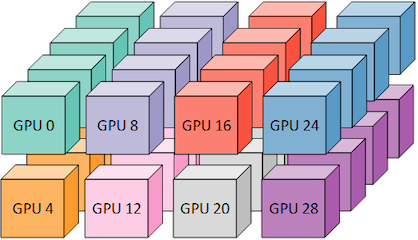

2.4.0
Install PyG
Installation
Get Started
Introduction by Example
Colab Notebooks and Video Tutorials
Tutorials
Design of Graph Neural Networks
Working with Graph Datasets
Use-Cases & Applications
Multi-GPU Training
Multi-GPU Training in Pure PyTorch
Multi-Node Training using SLURM
Advanced Concepts
Advanced Mini-Batching
Memory-Efficient Aggregations
Hierarchical Neighborhood Sampling
Compiled Graph Neural Networks
TorchScript Support
Scaling Up GNNs via Remote Backends
Managing Experiments with GraphGym
CPU Affinity for PyG Workloads
Package Reference
torch_geometric
torch_geometric.nn
torch_geometric.data
torch_geometric.loader
torch_geometric.sampler
torch_geometric.datasets
torch_geometric.transforms
torch_geometric.utils
torch_geometric.explain
torch_geometric.contrib
torch_geometric.graphgym
torch_geometric.profile
Cheatsheets
GNN Cheatsheet
Dataset Cheatsheet
External Resources
External Resources
pytorch_geometric
Multi-GPU Training
View page source
Multi-GPU Training

Multi-GPU Training in Pure PyTorch
Multi-Node Training using SLURM